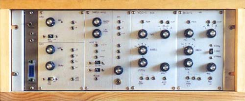
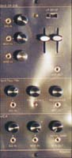

|

At some point in the early to mid eighties, I purchased a Roland SH5, complete with circuit diagrams. It had seen very little use and was in excellent condition, with the exception of noisy pots.
When I connected it up to the System 100M modules, I found out it didn't track 1 volt per octave! Retuning it I found the other fault - inaccurate H/M/L octave switching for the keyboard now was spot on.
Unfortunately, the pots continued to get worse, and there was no curing them. Eventually, some years later, after trying for weeks to sell the thing for $100 without a single inquiry, I gutted it and disposed of the case, as I was tired of tripping over it. I literally had nowhere I could keep it. The remains lived in a small cardboard box for many years.
Eventually a number of the circuit boards were wired together in an open frame rack case, with all key circuit points brought out to 1/8 inch jacks. There are three PCBs and the PSU. All the PCBs are reliant on each other for various reference voltages.

Some time later, and all the pots were replaced, and a pine case was made to protect the exposed innards. The power supply was tidied up, and the transformer boxed in a small shielded case.
The connector to the left is for the keyboard.
The filters and VCA (all on one PCB) are now part of the System 100M, and the envelope generators and mixer PCBs are not in use.
Article, art & design copyright 1999 by Ken Stone
|